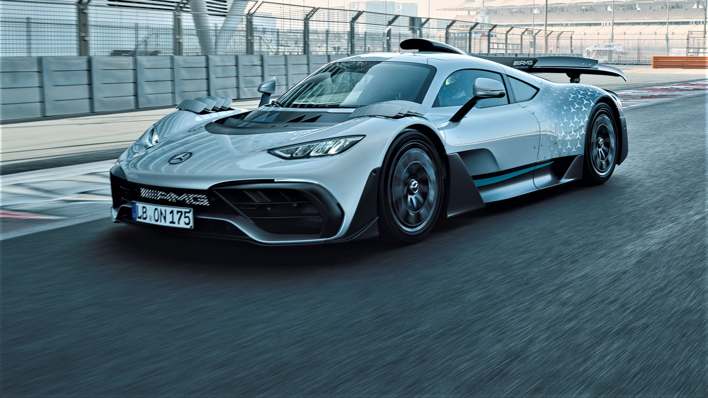
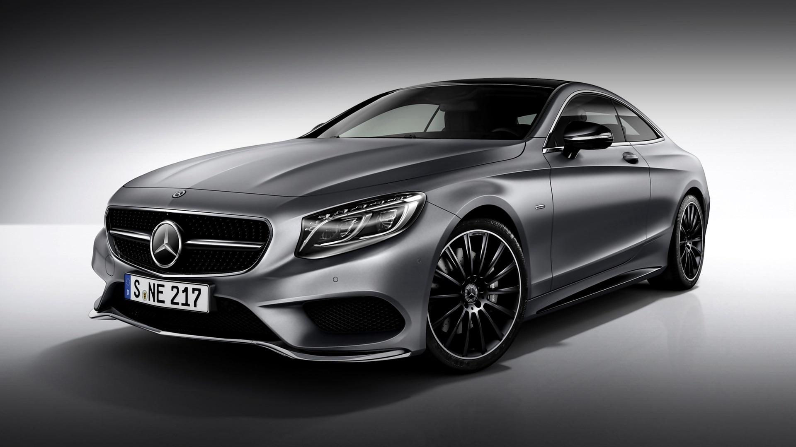
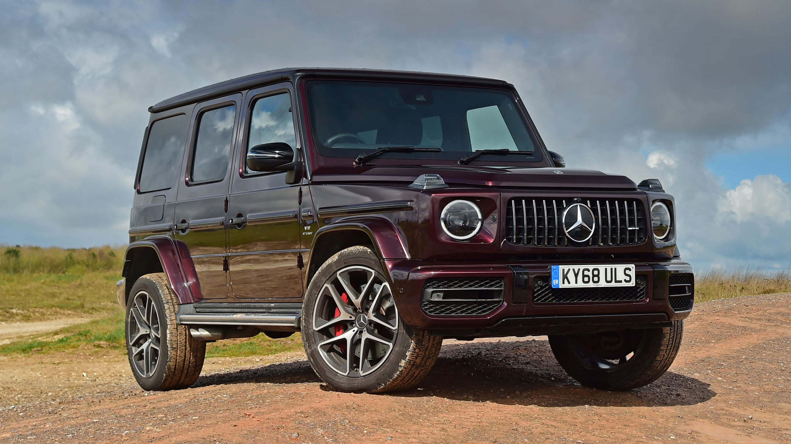

Mercedes-Benz to niemiecka marka samochodów, znana z luksusu, innowacyjnych rozwiązań i doskonałej jakości. Założona w 1926 roku, Mercedes ma bogatą historię w produkcji samochodów osobowych, dostawczych, a także samochodów wyścigowych.
Mercedes-AMG One to superauto z wyścigowymi korzeniami. Jest to hybrydowy hipersamochód, który wykorzystuje technologię zespołu Formuły 1 Mercedesa. Zbudowany dla niesamowitego osiągu i efektywności, AMG One to marzenie każdego kierowcy.
AMG One jest napędzany przez silnik V6 o pojemności 1,6 litra, który osiąga ponad 1000 KM mocy. Dzięki zaawansowanym technologiom hybrydowym, zapewnia niezrównane osiągi, jednocześnie pozostając przyjaznym dla środowiska.
Wnętrze AMG One jest zaprojektowane z myślą o maksymalnym komforcie kierowcy, jednocześnie zachowując charakterystyczny styl Mercedesa. Każdy detal został starannie przemyślany, aby zapewnić niezapomniane wrażenia z jazdy.
Mercedes-Benz S-Klasa to flagowy model Mercedesa, znany z niezrównanej luksusowej jazdy i najnowszych technologii. Zbudowany z myślą o komforcie i elegancji, S-Klasa oferuje najwyższy poziom wygody i wyrafinowania.
S-Klasa dostępna jest w różnych wersjach, w tym z tradycyjnymi silnikami spalinowymi oraz jako w pełni elektryczny model EQS. Bez względu na wybór, S-Klasa zapewnia niezapomniane doznania zarówno kierowcy, jak i pasażerom.
Wyjątkowo bogate wnętrze S-Klasy oferuje najnowsze technologie multimedialne i bezpieczeństwa, zapewniając podróż na najwyższym poziomie komfortu. Ponadto, S-Klasa wyróżnia się eleganckim designem, który przyciąga spojrzenia na drodze.
Mercedes-Benz G-Klasa to ikoniczny terenowy SUV, znany z wytrzymałości, niezawodności i niepowtarzalnego stylu. Zaprojektowany pierwotnie dla zastosowań wojskowych, G-Klasa stała się symbolem luksusu i mocy w świecie SUV-ów.
G-Klasa oferuje imponujące możliwości terenowe dzięki zaawansowanemu systemowi napędu na cztery koła i wysokiej przestrzeni naziemnej. Bez względu na warunki drogowe, G-Klasa radzi sobie z każdym wyzwaniem.
Wnętrze G-Klasy łączy w sobie surowy charakter z luksusowymi elementami wykończenia. Bogate opcje personalizacji pozwalają dopasować SUV-a do indywidualnych preferencji i stylu życia.
